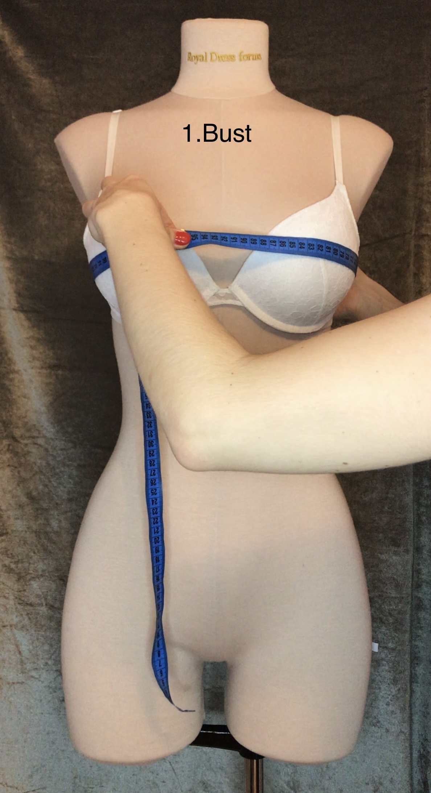
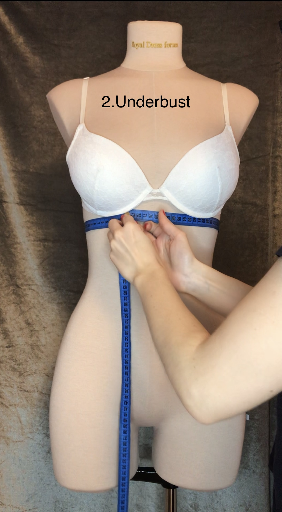
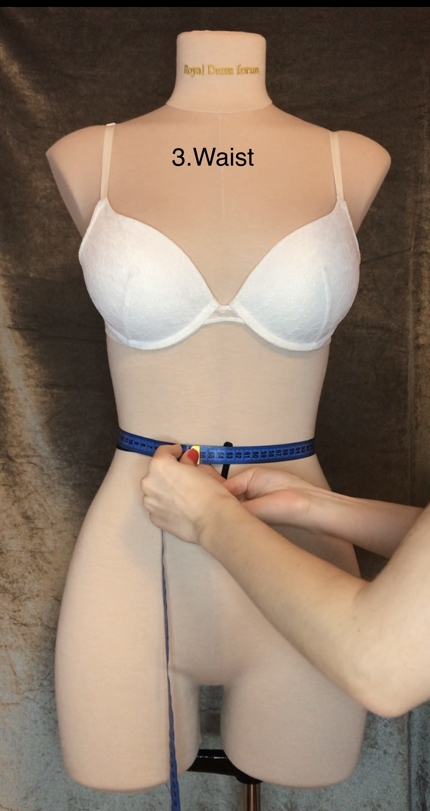
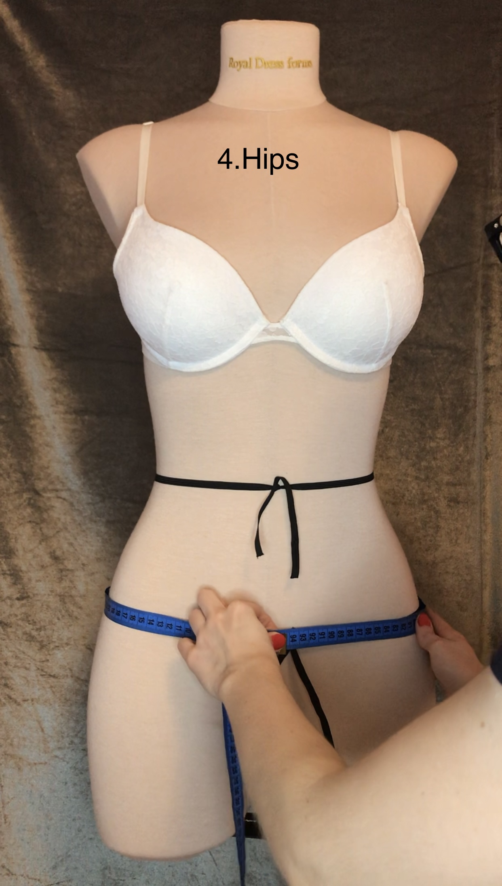
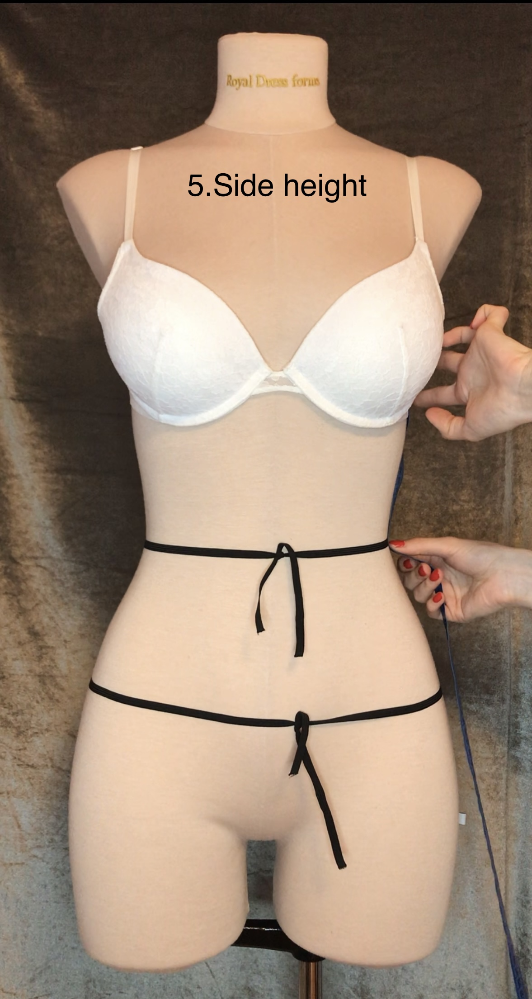
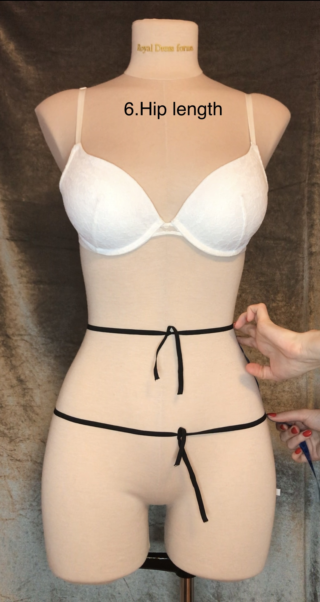
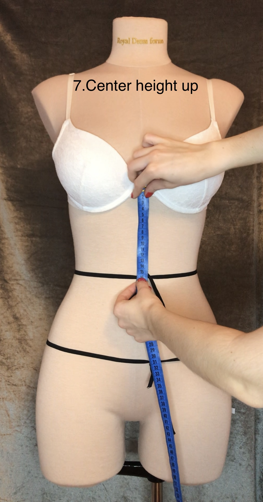
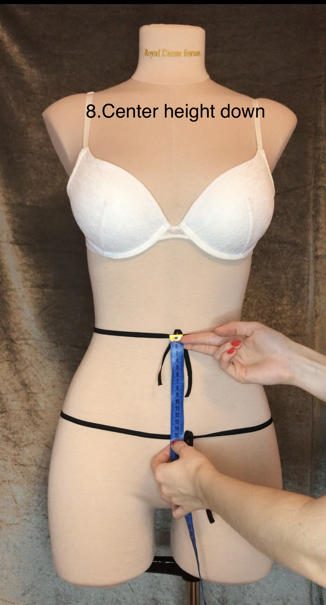

To take measurements you will need:
| Number | Measurement name | Description | Photo |
|---|---|---|---|
| 1 | Bust | The bust is measured by the nipple level, around the body, placing the tape parallel to the floor. |  |
| 2 | Underbust | Measured around the body, placing the tape directly under bust. |  |
| 3 | Waist | Measured around the narrowest part of the waist. |  |
| 4 | Hips | The girth of the hips for corsets is measured at the level of 15 cm below the waist around the body. Tie an elastic ribbon around the body at the hip level, with a tape measure the length starting from the elastic ribbon at the waist, so that there is a 15 cm distance between the ribbons and then measure the hip girth. |  |
| 5 | Side height | Measured sideways up from the lower edge of the ribbon at the waist to the armpit. |  |
| 6 | Hip length | Measured sideways up from the ribbon at the waist to desired length of the corset along the side seam. |  |
| 7 | Center height up | Measured from the ribbon at the waist up to the highest desired point of the corset. |  |
| 8 | Center height down | Measured from the ribbon at the waist down to the desired length of the corset in front. |  |